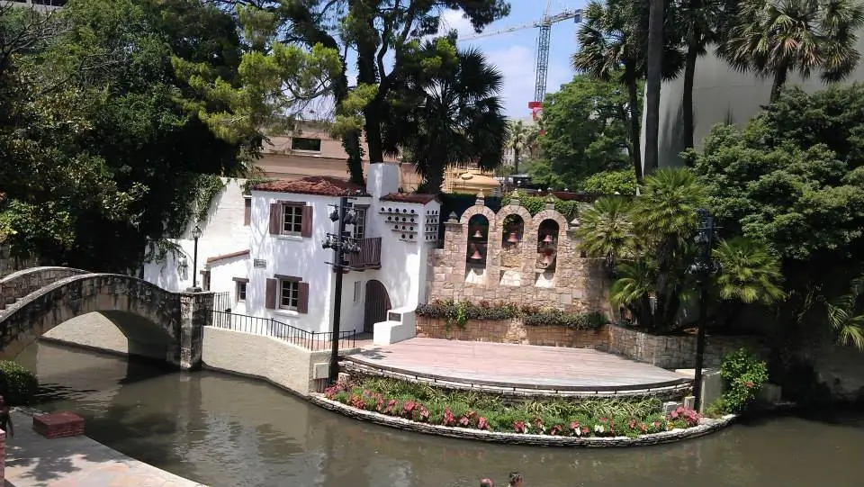
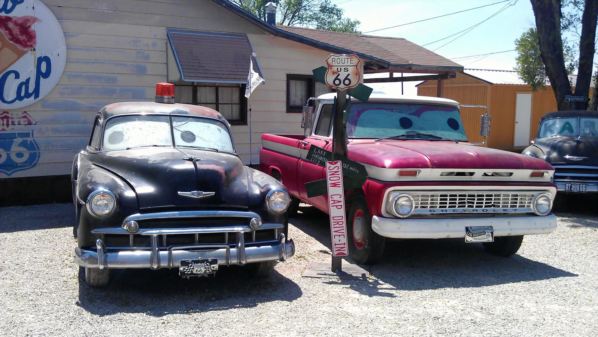
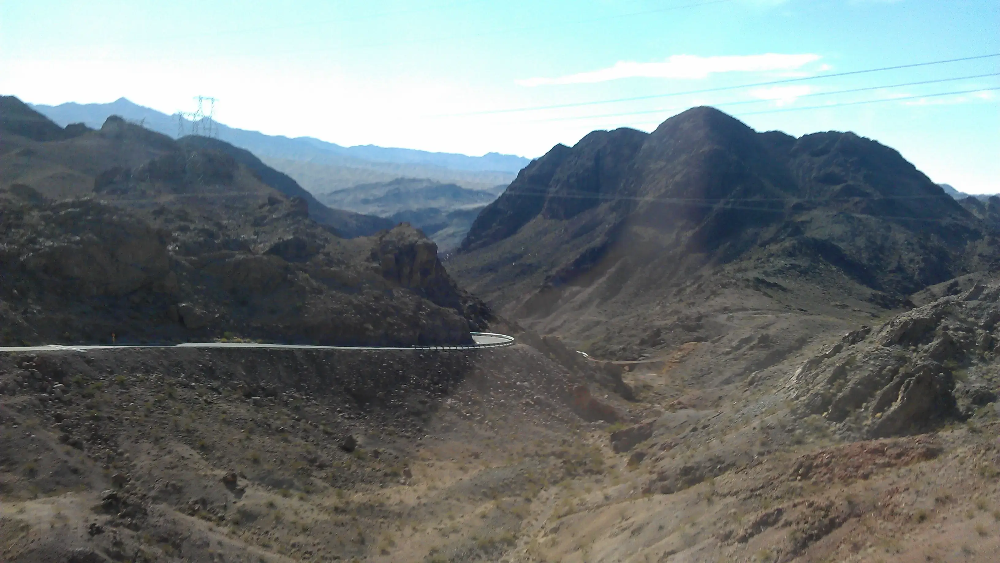

North America — and the United States in particular — is not always seen as a budget-friendly destination. Yet, being such a vast and diverse continent, the U.S. offers plenty even for travelers watching their spending. From vibrant cities and national parks to breathtaking landscapes, mountains, and beaches, there’s something for everyone.
While travel costs can be high and tourist infrastructure isn’t always the easiest to navigate, the U.S. is still a destination worth exploring. Even on a student budget, it’s possible to experience the highlights and create unforgettable memories without breaking the bank.
Ideas for what to see and do in the United States
The United States is full of possibilities for budget travelers, no matter what you’re into. Every state has its own personality — for me, it’s the mountains and famous landmarks that always call my name, while for others it might be the nightlife, beaches, or cultural scene. That’s the beauty of the U.S.: there’s truly something for everyone. Let’s look at a few ideas that prove you don’t need a big budget to enjoy this vast and diverse country. You can then read through my story bellow about how I travelled on student budget around 8 States by myself.
Manitou Springs and Old Colorado City in Colorado
Visit Manitou Springs and Old Colorado city in Colorado Springs and dive into america the beautiful of the past. Manitou Spring and Old Colorado City (historic part of Colorado Springs) are incredible western towns with traditional houses you may have seen in old western movies which let your imagination run wild when walking around whether you are visiting querky stores selling local craft or sipping macha in one of the local coffe/tea shops. Manitou Springs is set in the feet of Pikes Peak mountain 14110 ft eleveation trail you can hike up and come back through beautiful and one of the most difficult trail Barr Trail, or you can just stay down and soak up the western feel of the town while tasting one some of the local mineral water streams scattered around.
Explore iconic cities
Vist New York and walk from Battery park through Manhathan and up to Highline, join free Sandersman's free walking tour, jump on Staten island ferry and have ride for free while admiring the Statue of Liberty, walk Brooklyn Bridge and explore graffity open air art in Brooklyn followed by walk to Brooklyn brewery to learn about how they make the beer and enjoy the tast of refreshing pint after the long walk. Or hire a bike and ride around Central Park. The possibilities to enjoy New York on budget or free are endless.
Visit San Francisco enjoy the vibes of San Francisco fisherman Wharf with a view on famous Alcatraz island and the prison, walk accross Golded Gate Bridge or learn about history and mechanism of iconic cable cars in Cable Car Museum or simply wander through San Francisco's China town and enjoy some authentic chinese cuisine.
Learn about the history
For history lovers Smithsonian free museums in Washington DC such as American history museum where even whole day is not enough, Natural history museum, American Indian museum, Air and Space museum, will be a paradise to explore. There are countless sites where you can walk through America’s past without spending much at all.
Enjoy beaches and the coast
The U.S. has thousands of miles of coastline. Whether it’s surfing in California, relaxing on Florida’s white-sand beaches, or exploring the rugged Maine coast, you’ll find a stretch of shoreline that fits your style. Many beaches are completely free — just pack a towel and enjoy.
Explore the National Parks
From the rugged peaks of the Rocky Mountains to the landscapes of Yellowstone, the U.S. has some of the most incredible national parks in the world. Even if you’re on a budget, entrance fees are reasonable, and the experience of hiking through untouched nature is priceless. Don’t miss the Grand Canyon — no picture can prepare you for the real thing.
How to get around
United States is a huge country therefore there are number of ways to get around depending where you are.
Public transport
Public transport is an effective way to get around as most bigger cities and towns will have some sort of public transport - buses, trams, subway. In smaller towns and villages that could be a little problem as the public transport network in the U.S. is not as good as in Europe so always think about alternative.
Ride sharing
Lyft or Uber are much cheaper alternatives so try to avoid normal taxis as they are the most expensive.
Intercity buses
Buses are the cheapest and the best alternative, they run from most of places and are generally reliable and comfortable, just wear one more layer then usual as aircondition in buses is usually running on full blast so if you travel long distance for several hours it could be quite unpleasant experience. The most used bus companies are Flixbus, Greyhound and Megabus.
Hitchhiking
Unlike in Europe that is fairly common and safe way to get around so if you feel adveturous make a cardboard sign and try your luck. You may wait for quite some time so be prepared with snacks and plenty of water.
When to travel
Because United States are so huge, it difficult to say when to travel as each side of the country has different climate so the temperature can change all the time. One day you will be experience extremely hot weather but when arrive to a different place you can get raining and cold or even snow in the middle of summer so when to travel will depend on where are you going and what are you planning to do.
In the North the seasons are quite clear, places like New York and Boston will have cold winter with snow. Around the coast the we weather will be milder. In the central U.S. such as Colorado, there the weather can go from extreme to extreme such as snow in mid June or September for one or two days then sunny and hot. Warm weather will last until November then there will be a sudden dip for few days for example one day there can be 27 degrees and next day -27 degrees then it gets again mild.
On the South you will mild and dry in winter time and extreme heat such as 50 degrees in summer and unless you like the heat, you do not want to be there. I have learned that the hard way as mentioned in my story about one month of travel on student budget around the United States
Roadtrip by the bus
Salt Lake City, Utah
At the end of my internship in Colorado, I decided to spend my last month traveling back to New York through eight states. My journey began in Colorado Springs, and my first stop was Salt Lake City. Getting there by Greyhound coach gave me my first lessons in U.S. travel: schedules can change without warning, so always double-check, and bring warm clothes — the air-conditioning made the bus feel like a freezer even though it was nearly 30°C outside. Still, the coaches were surprisingly comfortable, far better than most budget flights in Europe.
I chose Salt Lake because of its Olympic Games history, but the city surprised me with its mix of mountain scenery and historic architecture. Temple Square was a real highlight — a vast area of gardens, fountains, and monuments dominated by the impressive Salt Lake City Temple. Another was the Red Butte Garden, with its flowerbeds, herb gardens, and mountain views. Wanting adventure, I walked there instead of taking public transport, only to get lost on my way back and nearly run out of phone battery. After circling for a while, I unexpectedly ended up near a military base — not part of the plan, but a story I’ll never forget!
Salt Lake City may not be every tourist’s first choice, but between the Olympic Village, Temple Square, and Red Butte Garden, it’s a place full of unique and memorable experiences
Las Vegas, Arizona
The next stop on my trip was the famous Las Vegas. Everyone knows the saying “what happens in Vegas, stays in Vegas,” but for me it wasn’t about gambling — I wanted to soak up the city’s energy and atmosphere I’d only seen in movies like The Hangover.
I arrived in the late afternoon and immediately realized how crazy this place is — there were even police officers at the station to guide newcomers. On my first day, I headed straight to the Strip, but with the heat blasting like a hairdryer, my friend and I ducked into the Stratosphere Tower and ended up spending the whole day there. The thrill rides on top were unforgettable — especially the X-Scream, which launches you over the tower’s edge and leaves you hanging weightlessly above the city. The adrenaline rush was unlike anything I’ve ever felt.
Later, I made the classic Las Vegas mistake — I took a photo at the “Thank you for visiting Las Vegas” sign instead of the famous “Welcome” one! That evening, our hostel hosts took us to a beach party at one of the resorts. Getting there crammed into a tiny van with 13 people felt like a comedy sketch, but we returned in style after negotiating a $7 limousine ride back.
The next day was a dream come true: a trip to the Grand Canyon. Along the way we stopped at the Hoover Dam and a stretch of historic Route 66, all must-sees if you’re in the area. Back in Vegas, I explored Fremont Street, another iconic part of the city. The real highlight wasn’t the neon lights, though — it was being taken by locals into a small bar away from the crowds, a much more authentic experience.
Las Vegas is a wild city full of buzz, entertainment, and landmarks, from its casinos to its over-the-top shows. If you visit, don’t miss the zip line over Fremont Street — unlike me!
Tuscon, Arizona
My journey continued with a stopover in Phoenix before heading to Tucson — another lesson learned: never visit Arizona in June. As my Couchsurfing host, an elderly lady, said with a laugh, “This is not the season for visitors.” She was right, but despite the oven-like heat, Tucson turned out to be an unforgettable experience.
Tucson is known for its strong ties to western movies and the famous Old Tucson film studio, once a backdrop for classics like El Dorado and Joe Kidd. Although the studio was closed during my visit, my host took me to Saguaro National Park, where the towering cacti and desert mountains created a stunning landscape I’ll never forget. Downtown also offered a taste of the Wild West through a lively open-air theatre show.
Beyond its western charm, Tucson is home to remarkable museums, the highlight being the 390th Memorial Museum, which tells the story of the U.S. Air Force during World War II. The restored warplanes and detailed exhibits make it a must-see for history enthusiasts.Tucson may not be on everyone’s bucket list, but for those who enjoy desert landscapes, western history, and warm local hospitality, it’s a destination well worth visiting — heat and all.
San Antonio, Texas
San Antonio quickly became one of my favorite stops on the way home. I’d heard so much about Texas during my year in Colorado, and staying with a Couchsurfing host just outside downtown gave me the perfect base to explore.The famous River Walk was my first destination — a vibrant stretch of bridges, cafes, and restaurants where I had the best buffalo wings I’ve ever tasted. A spontaneous river cruise took me past downtown sights all the way to the Alamo, offering a new perspective on the city.
I also explored the lively Historic Market Square, full of artisan shops, local produce, and daily entertainment, and wandered through the charming historic village of La Villita. To finish, I visited San Antonio Missions National Park, where four historic missions sit among tranquil scenery. The most impressive, Mission San José, gave a vivid glimpse into the city’s past and left me with lasting memories of San Antonio’s unique blend of history and atmosphere.
New Orleans, Louisiana
My next stop on the way home was New Orleans – the city of music. This incredible city instantly stole my heart, and I would recommend it to anyone. With its joyful vibes, street performers, and rich history, it truly feels like stepping into another world – one filled with music, mystery, and culture.
A visit isn’t complete without exploring Jackson Square, home to the stunning St. Louis Cathedral, surrounded by gardens and iconic French Quarter architecture. The French Quarter itself is full of charm, from its colorful balconies to the stories of haunted houses—except one with a cheeky sign saying “Not Haunted.” Nearby, the Louis Armstrong Park was another highlight, with its welcoming archway, tranquil ponds, and sculptures honoring the jazz legend. It’s a peaceful green escape that contrasts beautifully with the city’s lively streets. As evening falls, Frenchmen Street comes alive with live music spilling from countless bars and cafés, creating an unforgettable atmosphere.
One of the most unique experiences was joining a local bike ride through different neighborhoods, stopping at a small Native American museum and hearing stories of their heritage. We ended at a spot known as “The End of the World,” where the road runs out and a tiny bar offers a glimpse into true local life.
Atlanta, Georgia
At first, Atlanta was meant to be just a stopover to break up my journey home. But thanks to my welcoming local hosts, I quickly discovered the city had far more to offer than I expected. I had always associated Atlanta with the Olympic Games, but it surprised me with its culture, history, and charm—and I left wishing I had stayed longer.
One of the highlights was visiting the World of Coca-Cola Museum, dedicated to one of the world’s most famous drinks. The museum takes you through the story of Coca-Cola—from its invention and original ingredients (including coca leaves, later banned in the 1950s) to how its flavors are tailored for different countries. I loved seeing the incredible collection of bottles and trying unusual sodas from around the globe, like Peru’s bright yellow Inca Kola. Whether or not you’re a Coca-Cola fan, it’s a fun and fascinating experience, especially for families.
Another gem was the elegant Swan House, a historic mansion with beautiful gardens that also served as a filming location for The Hunger Games—fans will instantly recognize it as the Capitol. Beyond the movie connection, it’s also a place that captures the rich cultural history of Atlanta.
Washington DC
Washington, DC is an unmissable destination for anyone spending time in the United States. The city’s historic downtown is home to the Smithsonian complex, the largest collection of museums in one area, making it a paradise for history buffs and museum lovers alike. With so many options—most offering free entry—you could easily spend a week exploring. My personal highlights were the Museum of American History, so vast it deserves a full day on its own, and the fascinating Museum of the American Indian.
Beyond museums, DC is filled with iconic landmarks. A walk through the National Mall brings you face to face with the Capitol, the Washington Monument, the moving Memorial Parks, and of course, the White House. One tip: book a White House visit well in advance—it’s something I wish I had known before my trip, as it would have been the perfect finale to my stay.
Washington, DC offers history, culture, and atmosphere in abundance, and it’s a city I’d recommend to anyone—it’s not just worth a visit, it’s unforgettable.
New York City
New York was the highlight of my solo trip and the perfect finale to my journey across eight states. Arriving in the bustling city, I immediately felt its unstoppable energy. My stay was in Brooklyn’s Williamsburg, a short distance from downtown, and I quickly learned that navigating the subway with two heavy suitcases among rushing commuters is no easy task. Walking, however, turned out to be the best way to experience the city, from the Italian Quarter and Chinatown to Battery Park and the September 11 Memorial & Museum, a profoundly moving site.
Times Square buzzes with energy, Central Park offers tranquil green spaces, and the Empire State Building provides breathtaking sunset views over the skyline. I also explored Wall Street’s historic streets and visited the Brooklyn Brewery, a must for beer enthusiasts, where tasting a cold Brooklyn Lager after the tour was a perfect summer treat. Central Park is enormous and best explored by bike. Highlights include Belvedere Castle, Bethesda Terrace with its iconic fountain, and Gapstow Bridge, all offering stunning city views. The High Line, a public park built on a former railway, provides a unique nature escape amidst the concrete, leading to the waterfront and the Intrepid Museum, which I plan to visit on my next trip.
New York is a city of contrasts—buzzing streets versus peaceful parks—and a melting pot of cultures. For those who love walking, exploring historic and cultural sites, and discovering hidden gems, it’s an urban paradise. The city’s energy, freedom, and endless possibilities make it unforgettable, and for me, New York will always be the top destination in the United States.